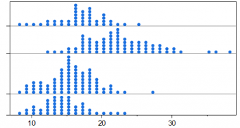
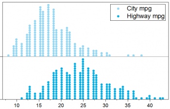

メニュー：作図 > 統計 : ドットプロット

メニュー：作図 > カテゴリカル：グループ化ドットプロット

メニュー：作図 > カテゴリカル：グループ化積み上げドットプロット

メニュー：作図 > 統計 : ドットプロット

メニュー：作図 > 統計 : 積み上げドットプロット

メニュー：作図 > カテゴリカル：グループ化ドットプロット

メニュー：作図 > カテゴリカル：グループ化積み上げドットプロット
ドット プロットは、塗りつぶされた円を使用して、単純なスケールでプロットされたデータ ポイントで構成される統計グラフです。
Originは、作図メニューからドットプロットをプロットできます。
|
1つのYのドットプロット | 入力：Y列1つ メニュー：作図 > 統計 : ドットプロット |
 |
グループを持つ1つのYのドットプロット | 入力：Y列1つとグループ列が1つ メニュー：作図 > カテゴリカル：グループ化ドットプロット |
|
積み上げグループを持つ1つのYのドットプロット | 入力：Y列1つとグループ列2つ メニュー：作図 > カテゴリカル：グループ化積み上げドットプロット |
 |
複数のYのドットプロット | 入力：複数のY列 (この例では2列) メニュー：作図 > 統計 : ドットプロット |
|
複数のY、積み上げドットプロット | 入力：複数のY列 (この例では2列) メニュー：作図 > 統計 : 積み上げドットプロット |
|
グループを持つ複数のYのドットプロット | 入力：複数のY列 (この例では2列)とグループ列1つ メニュー：作図 > カテゴリカル：グループ化ドットプロット |
|
積み上げグループの複数のYのドットプロット | 入力：複数のY列 (この例では2列)とグループ列2つ メニュー：作図 > カテゴリカル：グループ化積み上げドットプロット |
グループ化ドットプロットをプロットすると、Xファンクションplot_gdotが開き、ドットのプロット方法を指定できます。
カウントするソースYデータ列を選択します。複数の列を選択できます。
グループ化列を選択します。
入力列が複数ある場合、出力シートでデータをソートしてグループ化ドットプロットをどのようにプロットするか指定できます。このコントロールは、列アンスタッキングダイアログの出力列のソートと同じです。
積み上げコントロールが入力変数、最後のグループまたは全グループに設定されている場合は無効になります。積み上げ入力変数を選択すると、グループ情報を先にが使用されるためです。最後のグループまたは全グループを選択すると、入力変数を先にが使用されます。
ドットプロットを積み上げるかどうか、および各グループでの積み上げ方法を指定します。
ドットの配置方法を指定します。
このコントロールは、作図の詳細のデータタブにあるポイント配置コントロールと同じです。
特にY軸上に複数の表形式の行がある場合に、目盛ラベルがうまく表示されるように、ページをレイヤに合わせる際の水平余白を指定します。
指定したグループ列を使用して、積み上げていない入力列を出力します。
ドットプロットを作成したら、作図の詳細ダイアログを使用してドットプロットを編集できます。
また、プロット要素をクリックしてミニツールバーを開き、編集することもできます。